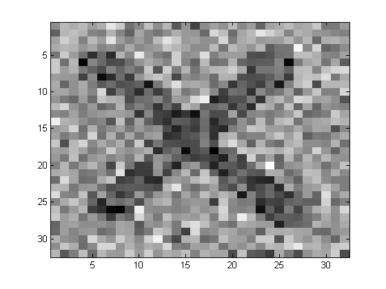
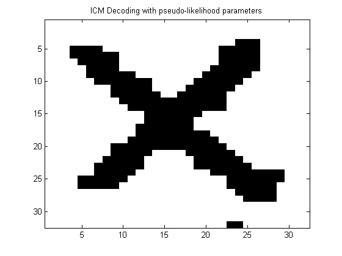
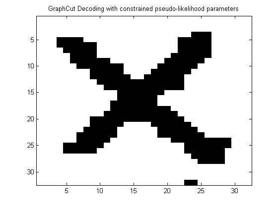

Contents
Demonstrate training a lattice-structured CRF
Based on http://people.cs.ubc.ca/~schmidtm/Software/UGM/trainApprox
% This file is from pmtk3.googlecode.com
Get data
setSeed(0);
X = loadData('Ximg');
Xclean = X;
y = 1+X;
X = Xclean + 0.5*randn(size(Xclean));
figure; imagesc(X); colormap(gray)
[nRows,nCols] = size(X);
nNodes = nRows*nCols;
nStates = 2;
y = reshape(y,[1 1 nNodes]);
X = reshape(X,1,1,nNodes);
 Make model
adj = latticeAdjMatrix(nRows,nCols);
tied = 1;
ising = 1;
edgeStruct = UGM_makeEdgeStruct(adj,nStates);
% Add bias and Standardize Columns
Xnode = [ones(1,1,nNodes) UGM_standardizeCols(X,tied)];
sharedFeatures = [1 0];
Xedge = UGM_makeEdgeFeatures(Xnode,edgeStruct.edgeEnds,sharedFeatures);
Fit by PL, decode by ICM
model = crf2Create(adj, nStates, 'ising', ising, 'tied', tied, 'method', 'ICM'); model = crf2Train(model, Xnode, Xedge, y, 'method', 'PL'); yDecode = crf2Map(model, Xnode, Xedge); figure; imagesc(reshape(yDecode,nRows,nCols)); colormap gray title('ICM Decoding with pseudo-likelihood parameters');
Fit with submodular PL and decode with graph cuts
sharedFeatures = [1 0]; Xedge = UGM_makeEdgeFeaturesInvAbsDif(Xnode,edgeStruct.edgeEnds,sharedFeatures); model = crf2Create(adj, nStates, 'ising', ising, 'tied', tied, 'method', 'GraphCut'); model = crf2Train(model, Xnode, Xedge, y, 'method', 'PLsubmod'); figure; imagesc(reshape(yDecode,nRows,nCols)); colormap gray title('GraphCut Decoding with constrained pseudo-likelihood parameters');
Iteration FunEvals Step Length Function Val Opt Cond
L-BFGS
1 2 3.09806e-04 1.49026e+02 4.41903e+02
2 3 1.00000e+00 1.29191e+02 3.22272e+02
3 4 1.00000e+00 9.81912e+01 1.52619e+02
4 5 1.00000e+00 8.22901e+01 8.50112e+01
5 6 1.00000e+00 6.91475e+01 4.13349e+01
6 7 1.00000e+00 6.21604e+01 1.91513e+01
7 8 1.00000e+00 5.86519e+01 9.84196e+00
8 9 1.00000e+00 5.64292e+01 6.43810e+00
9 10 1.00000e+00 5.37478e+01 3.77509e+00
Cubic Backtracking
10 12 1.28583e-01 5.35776e+01 9.42550e-01
11 13 1.00000e+00 5.35542e+01 5.79182e-01
12 14 1.00000e+00 5.35440e+01 1.61820e-01
13 15 1.00000e+00 5.35436e+01 9.06866e-02
14 16 1.00000e+00 5.35434e+01 8.53332e-03
15 17 1.00000e+00 5.35434e+01 6.31346e-04
16 18 1.00000e+00 5.35434e+01 3.22259e-05
Directional Derivative below progTol
